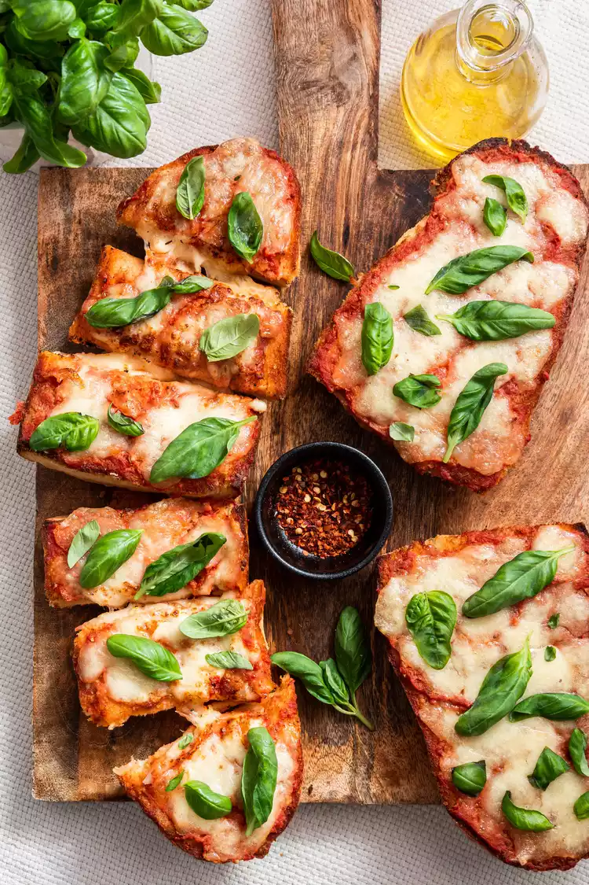

Trinidadian Boiled Corn
Some recipes sit squarely between being a snack and a full meal, and French bread pizza is one of them. One or two slices make a great light bite, double it up and dinner is done. And that's what is great about this recipe—it's flexible. You can answer a pizza craving in just 30 minutes with no messy dough to deal with.

The biggest difference between a great French bread pizza and a mediocre one is the bread. We're looking for bread with structure, a tight crumb, and a light crust. Use bread that's too soft and it will be soggy, one with too many holes and it will look lumpy, and an extra-crusty bread will be too hard to bite through.
Given that “French bread” is in the name, many people might be tempted to use a baguette, but that would be a mistake. Long, thin, chewy, and crusty baguettes are great for a number of things, but making French bread pizza is not one of them.
What you're looking for is a super soft, squishy French loaf (sometimes also called an Italian loaf). The wider loaf will not only give you more surface area to cover with sauce and cheese, but will also produce a crisp crust that gives way to a tender center that's easy to eat. You can use either a day-old or a fresh French loaf here.
In my opinion, the best pizza sauces are usually nothing more than high-quality canned tomatoes with a little salt, garlic, and olive oil. That being said, since this particular version of French bread pizza is light on toppings, I upped the flavors a bit with a sprinkle of dried oregano and chili flakes.
If you have leftover homemade tomato or pizza sauce, or a jar of store-bought sauce, feel free to use that here instead. Just opt for a simple tomato basil sauce if going store-bought.
The key to keeping French bread pizza from getting soggy is easier than you might think: simply toast the bread before adding toppings. In this recipe, the toasting actually serves two purposes: it creates a nice crisp surface to rub garlic against for adding flavor and allows the sauce to gently soak in without becoming a soggy mess.
Once your bread is toasted and garlic-rubbed, you'll top it with a few spoonfuls of sauce, reserving any extra sauce for dipping. If you're really worried about your pizza being soggy, you can also skip the sauce on the actual pizza, then dip the cheesy bread into warm tomato sauce and enjoy.
When it comes to French bread pizza, it's best to keep the toppings small, light, and on the dry side. Here are some to try:
Prep Time: 5 mins
Cooking Time: 15 mins
Total Time: 20 mins
Serving: 4 servings
Preheat the broil function on your oven to high and move one rack to the top position, and one rack to the center.
Slice the loaf of bread in half lengthwise, then press each side down with your hands to flatten the surface a bit.
Slice in half crosswise and transfer the 4 pieces to a baking sheet. Spread the exposed bread with butter and drizzle with half the olive oil. Broil the loaf until golden brown, about 3 to 5 minutes depending on your broiler, then remove and set aside.
Turn off the broiler and preheat the oven to 450°F.
Add the crushed tomatoes to a small bowl. Add the grated garlic, oregano, chili flakes, and a pinch of salt and mix to combine. Rip the mozzarella cheese with your hands into large pieces. Rip the basil leaves from the stem and set aside.
Rub the whole garlic clove onto the cut side of each piece of toasted bread. Spread between 2 and 4 tablespoons of tomato sauce onto each piece of toasted bread, depending on your preference for sauciness.
Divide the mozzarella cheese equally over the top of the pizzas and top with a final drizzle of olive oil.
Bake on the center rack at 450°F, until the cheese is melted and slightly browned, 8 to 10 minutes. You can also give them a final blast on the top rack under the broiler, if desired. Just keep a close eye so the bread doesn't burn.
Season with salt (if needed) and let cool for a few minutes before finishing with the basil leaves. Slice into pieces and serve.
If you have any leftovers, wrap them tightly in tin foil and store in the fridge for up to 2 days. Unwrap and reheat in a preheated oven at 400°F until warmed through, about 8 minutes.
You can check out new recipes, cooking tips, and even add your own recipes to help out other beginners!
Check out our about page